|
Parque de la Vía Appia Antica El Parque Regional de la Via
Appia Antica. La Vía Appia, una de las calzadas más importantes y
famosas de Roma. Unía Roma con Brindisi.
- La villa de Majencio es una
villa imperial en Roma, construida por el emperador o Majencio. El
complejo está ubicado entre la segunda y tercera milla de la Vía Apia, y
consta de tres edificios principales: el palacio, el circo y el mausoleo
dinástico, diseñados en una unidad arquitectónica inseparable para
homenajear a Majencio.
- La Villa de los Quintilii es el mayor complejo residencial de las afueras de Roma, una lujosa ciudad en miniatura situada en la quinta milla de la Vía Apia Antica que dispuso de edificios para espectáculos y un gran complejo termal. En abril de 2023, hallan una lujosa bodega imperial romana del siglo III, con fuentes de vino y salones para banquetes. Foto: www.elespanol.com 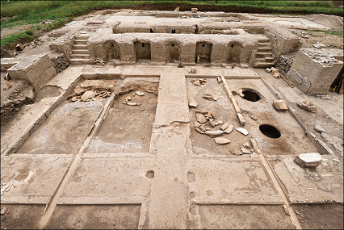
Rampa Imperial La rampa imperial de
Domiciano en el Foro Romano, fue construida en la segunda mitad del
siglo I, la rampa conectaba el Foro Romano y el Palacio Imperial. Fue un
verdadero ascenso a la residencia del emperador. 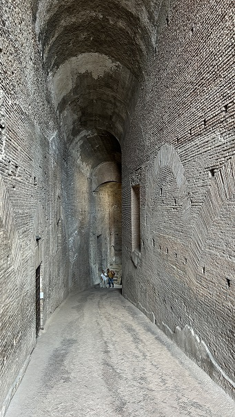
Parque Arqueológico del Coliseo Un proyecto de investigación
que se lleva a cabo actualmente en el Parque Arqueológico del Coliseo ha
permitido descubrir algunos ambientes de una lujosa domus de la época
augusta, recubierta de excepcionales mosaicos "rústicos". La domus,
localizada detrás de los horrea, los almacenes en la carretera comercial
que unía el puerto fluvial del Tíber y el Foro Romano, está desarrollada
en varios pisos, probablemente articulada en terrazas y caracterizada
por al menos tres fases constructivas, datadas entre la segunda mitad
del siglo II a.e.c. y finales del siglo I a.e.c.La rampa imperial de
Domiciano en el Foro Romano Casa Caligula En noviembre de 2020 en las oficinas de Enpam, en la Piazza Vittorio Emanuele II, se descubre la casa del emperador Calígula revelando que tenía un jardín ornamentado, semillas de plantas exóticas y también una colección de animales exóticos. Domus Aventino Se inaugura un área
arqueológica con restos de entre los siglos VIII a.e.c y III dentro de
un patio de vecinos. A partir de noviembre de 2020 quien lo desee podrá
visitar estos restos arqueológicos dos veces al mes. En Piazza Albania.
Insula Romana La Insula Romana data del siglo II. Se localiza en Vía del Teatro di Marcello, en la Basílica de Santa María en Ara Coeli, cerca del Capitolio. Casa dei Grifi La casa se localiza en el Palatino, bajo el ala del norte del palacio de Domiciano. Es el ejemplo de casa de la época republicana mejor conservado en la ciudad de Roma. El nombre proviene de la decoración del estuco de una luneta con grifos. Esta domus pudo pertenecer a Lucio Sergio Catilina. Se puede visitar a partir de marzo de 2026, a través de una visita guiada en remoto y en tiempo real. Considerada el ejemplo más antiguo del "segundo estilo" en Roma. Mientras que el primer estilo imitaba materiales nobles, aquí los artistas republicanos buscaron la ilusión óptica y la tridimensionalidad. Ver video: Casa Grifos
Casa de Augusto También en el Palatino, un poco más adelante, a pocos metros de donde se encontró la cabaña de Rómulo, se localiza la casa de Augusto. La zona recuperada en 2008 corresponde al ala este de la villa. Una parte que se construyó antes de que Octavio fuera proclamado "Augusto" por el Senado de Roma. Las cuatro habitaciones recuperadas de la Casa de Augusto están en el lado septentrional del peristilo, tres de ellas en el mismo nivel y la última en una altura superior. La situada en el piso superior es el "studiolo (despacho pequeño) del emperador", mientras el resto son el "gran Ecus", sala dedicada a recibir visitas. Los frescos de altísima calidad constituyen un importante ejemplo de pintura romana de finales del siglo I.
Necrópolis Vaticanas Son dos las necrópolis que
podemos visitar. La necrópolis Vaticana, donde se localizan los restos de
la tumba de San Pedro y la necrópolis de la Vía Triumphalis, que se
localiza bajo el garaje del Vaticano. Fue en época de Nerón, en la antigua
Via Cornelia, el lugar de sepultura de San Pedro. En el 319 el emperador
Constantino construyó la primera basílica.
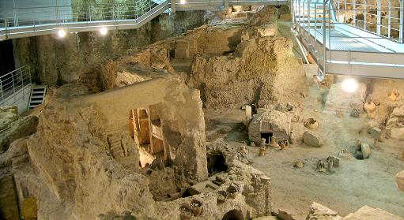
Fullonica y Horti Agripina En junio de 2024, unas obras de remodelación en Piazza Pia, han sacado a la luz los restos de una antigua lavandería, datada entre finales del siglo II y principios del III, que fue construida sobre lujosas residencias republicanas que posteriormente pasaron a pertenecer a la élite imperial. 500 m2, que aún conserva en perfecto estado las bañeras de piedra y unos extraordinarios suelos de mosaico. "Por esta zona pasaba una calzada muy importante, el primer tramo de las vías Triumphalis y Cornelia, donde se situaban los horti, que eran grandes residencias, primero de los aristócratas republicanos y después de la élite imperial. Fue posteriormente cuando la zona fue convertida en una instalación al aire libre para lavar ropa". Todos estos hallazgos, según ha anunciado el Ministerio de Cultura de Italia, se trasladarán a una zona arqueológica próxima al Castel Sant'Angelo, donde serán expuestos. También encuentran el pórtico de los Horti de Agripina, el lugar donde Calígula recibió a la delegación de los judíos de Alejandría.
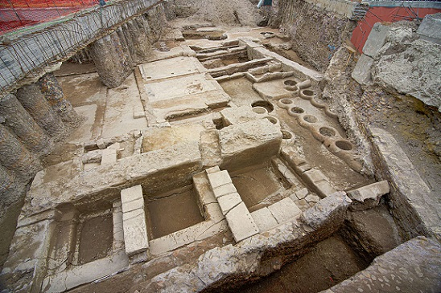
Domus Aurea
La Rostra Era la gran tribuna desde
donde los oradores se dirigían al Pueblo Romano. Fue construida en el 338
a.e.c., aunque sus restos actuales datan del 29 a.e.c. Mide 24x12m. Es un
muro de ladrillo rojo.
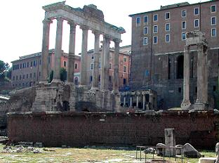 Tabularium El Tabularuium de Sila, era el
archivo de Roma, fue construido por el dictador Lucio Cornelio como sede
del archivo público de Roma. Contenía las 12 Tablas, leyes, edictos, y
tratados que realizaban los magistrados romanos. Se construyó con grandes
muros de 3,5m. Era como una doble muralla con corredores estrechos para
guardar los documentos oficiales.
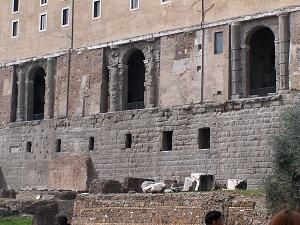 Umblicus Urbis Romae y Milliarium Aureum El Umblicus Urbis Romanae se halla en el Foro, era el centro de la ciudad, el pozo fundacional, donde Romulo puso la primera piedra y trazó el perímetro de la ciudad tomando este punto como centro. Se halla entre el arco de Séptimio Severo y el templo de Saturno. El Milliarium Aureum, erigido por Augusto 20 a.e.c, era una columna de bronce próxima al templo de Saturno; que marcaba las distancias de las ciudades importantes del Imperio con Roma, el Km 0.
Plutei de Trajano Los Plutei de Trajano son unos parapetos de mármol tallado que fueron descubiertos en el año 1872. Se encuentran en la Curia Julia del Foro Romano, aunque no eran parte de su estructura original. Tienen dos escenas distintas. El relieve de la derecha muestra al emperador Trajano distribuyendo los alimenta, institución caritativa para huérfanos. En el relieve de la izquierda se ve la destrucción de los archivos de los impuestos retrasados en presencia del emperador, la práctica del «perdón fiscal» la llevó a cabo Trajano Trajano tras su victoria en las Guerras Dacias. Ambos mármoles tienen relieves en la parte posterior. Representan edificios del Foro Romano.
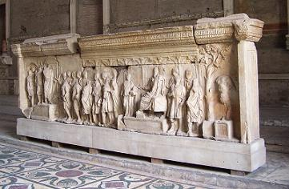 Lapis Niger
Cárcel Mamertina
Monte Testaccio
Bocca della Verità Se localiza en la Iglesia de Santa
María in Cosmedin se colocó en la pared del pronaos en el año 1632.
Se halló en el río Tiber.
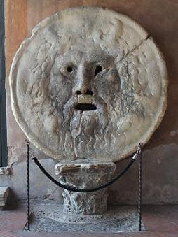 Reloj Solar de Augusto El Reloj Solar de Augusto o el Horologium Augusti fue el mayor Reloj de sol del mundo antiguo, fue construido por augusto en el año 10 a.e.c. Ocupaba una gran área que abarcaba la Piazza di S. Lorenzo in Lucina y la Piazza del Parlamento, localizándose concretamente en el Campo de Marte a escasos metros del Ara Pacis. El obelisco se halla en la Piazza di Montecitorio. De las inscripciones en bronce, solo es visible una pequeña sección de la línea del meridiano. Saepta Julia Sus restos se halla en la Vía di Minerva. Fue un edificio situado en el
utilizado como lugar de votación durante la República. El edificio fue
planificado por Julio César pero lo concluyó fue Agripa en el 26 a.e.c.
En época de Augusto, Calígula y Claudio parece ser que se usó para luchas
de gladiadores, y posteriormente como mercado. También fue una de las
sedes de los Juegos Seculares. Isla Tiberina
Aun conserva la forma que le
fue dada en tiempos de Roma. En el centro de la isla se hallaba el templo
dedicado al dios de la medicina, Esculapio, en el 289 a.e.c. En el siglo I
a.e.c. la isla se cubrió de piedra simulando un barco que navegaba por el
Tiber. Se conservan algunos restos del espolón de proa. Con el tiempo los
esclavos viejos o enfermos eran abandonados en la isla, al cuidado de los
sacerdotes de Esculapio.
Actualmente el recinto está ocupado por la iglesia de san Bartolomé.
Enlaza con la orilla mediante el puente Fabricio. Puentes - El primer puente romano que
cruzaba el Tiber fue el puente Sublicio (Pons Sublicius), cerca de la Isla
Tiberina. Fue construido en madera, según la tradición por el rey Anco
Marcio. Ager Vaticanus
El ager Vaticanus era una zona pantanosa junto
al Tiber. En época imperial se construyeron villas residenciales y
jardines; pero fue Calígula el que ordenó construir un circo en el año 38,
y en la spina del circo colocó un obelisco traído de Alejandría. Entre el
circo y la colina vaticana, se hallaba la tumba de San Pedro. Fue el
emperador Constantino el que encargo la edificación del templo alrededor
de la tumba del santo. Este fue el origen del Vaticano. La Regia Fue uno de los primeros edificios construidos en el foro en época de N. Pumpilio. Era la el centro político y religioso en época monárquica. En su interior había un santuario dedicado a Marte y otro a Ops. Los restos conservados son del siglo I a.e.c. Debajo de ellos los arqueólogos han hallado los restos de las primeras cabañas de época monárquica. Lago Curcio
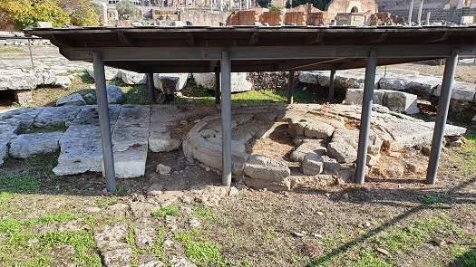
Meta Sudans La Meta Sudans data del siglo I, era un lugar público situado en un valle por el que discurría un riachuelo. Era una fuente de forma cónica que en el siglo II los gladiadores se refrescaban en sus aguas antes de los combates en el Coliseo. Hasta hace poco estaba escondida bajo una carretera pero Mussolini en 1936 destruyó la Meta Sudans, la fuente situada junto al Arco de Constantino. Actualmente son visibles sus cimientos. S. María in Cosmedin S. Maria in Cosmedin. En su interior se hallan los restos del altar de Hércules. Fue reconstruido en el siglo II a.e.c. y actualmente sirve de cimientos a esta iglesia. En su interior se excavó una cripta, a la que se accede desde las naves laterales. También se hallan los restos del pórtico del templo de Hércules datados en el siglo I. En los muros de la iglesia y la sacristía son visibles los restos de las columnas del pórtico. Cloaca Massima La Cloaca Máxima es una de las redes de alcantarillado más antiguas del mundo. Fue construida con el fin de drenar los pantanos locales y eliminar los desperdicios de la ciudad. Desembocaba en el Tiber. Fue construida por Lucio Tarquino Prisco, siglo VI a.e.c., y aun esta en uso.
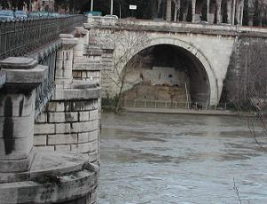 Campamento Pretoriano El campamento pretoriano (en latín, Castra Praetoria) era el antiguo cuartel o campamento (castra) de la Guardia Pretoriana en la Roma Imperial. Según Suetonio, el campamento se construyó en el 23 por Lucio Elio Sejano. El campamento fue erigido a las afueras de la ciudad de Roma rodeándolo de sólidas murallas con unas dimensiones de 440x380m. Tres de las cuatro paredes de la muralla fueron más tarde incorporadas a la Muralla Aureliana, y partes de ellas aún pueden verse en la actualidad. El Castra Praetoria y la Guardia Pretoriana fueron destruidas por Constantino I.
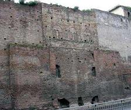 Marforio
Pasquino La estatua de Il Pasquino es la más famosa de las estatuas parlantes de Roma, convertida en figura característica de la ciudad entre los siglos XVI y XIX. La estatua es un fragmento de un obra helenística, probablemente del siglo III a.e.c. Representa casi con seguridad a un guerrero heleno. En 1501 fue colocada en el lugar que ocupa en la actualidad, la piazza di Pasquino.
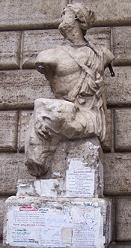
La Tumba del Atleta En junio 2018, unos
trabajos de arqueología preventiva, con motivo del redoblamiento de la
captación de agua del acueducto Castell'Arcione-Salone, en la zona de
Case Rosse, al noreste de Roma, ha sacado a la luz una tumba intacta de
época republicana que ha sido fechada entre el siglo IV y el III a.e.c.,
según la Superintendencia Especial de Arqueología, Bellas y Artes y
Paisaje de Roma. La sepultura está formada por una cámara excavada a
unos 2 metros de profundidad y con cuatro inhumaciones realizadas en
momentos diferentes: dos hombres adultos cuyos restos estaban
depositados sobre unos bancos laterales tallados en la roca; y dos
individuos cuyos restos óseos estaban depositados en el fondo del hueco
que hay entre ambos bancos.
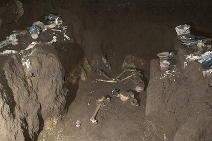
Parada metro Coliseo Colosseo–Fori Imperiali, la arqueología aparece con un tono casi pedagógico. Las excavaciones han revelado una compleja red hidráulica de pozos de época republicana, los restos del balneum de una domus (I a.e.c.- I) y los de otra domus con varios frescos, además de inventario diverso de objetos, que incluye cerámicas, estatuas y lámparas de aceite. Esta inmersión en el pasado se refuerza mediante el propio diseño arquitectónico: un gran óculo abierto en el pasaje de enlace permite contemplar el Coliseo desde el propio recorrido. Ver video: link
Parada metro Puerta Metronia Porta Metronia,
junto a las murallas Aurelianas, ofrece, por su parte, una visión de la
vida militar cotidiana a principios del siglo II. Durante la
construcción de esta estación, aparecieron los restos de unos cuarteles
con unos suelos de mosaico y unos frescos que llaman especialmente la
atención. Destaca, en el conjunto, una residencia de mando, la
denominada Domus del Comandante, documentado junto a los barracones, y
que se articula en torno a un patio con fuente. En la mitad oriental se
identificó un jardín en terrazas. En la primavera de 2016, los trabajos
de excavación en la futura estación de metro, permitieron descubrir un antiguo
cuartel romano de la primera mitad del siglo II. Pero en marzo de 2018
surgieron dos edificios adyacentes al dormitorio del cuartel romano.
Los nuevos hallazgos fueron anunciados por la Superintendencia
Arqueológica de Roma: dos alas, una al este y la otra al oeste de dicho
dormitorio, que fueron construidas también durante el reinado del
emperador Adriano y que han sido excavadas a 12 metros de profundidad,
casi tres metros por debajo del cuartel romano. 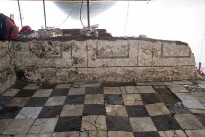
Excavación Puente Milvio Descubierto en 2017 y
excavado en 2018, la Superintendencia Arqueológica de Roma baraja varias
hipótesis. Las construcciones más antiguas son de época imperial, del
siglo I o II, y probablemente pertenecerían a un edificio más grande con
una función comercial, por ejemplo un almacén, o que estaba relacionado
con la presencia del río Tíber, de la Vía Flaminia o con el uso de
ambos. En el siglo III o IV, se edificaron sobre estas estructuras
antiguas unos muros en opus vittatum y los extraordinarios pavimentos en
opus sectile. Podría tratarse de una suntuosa villa suburbana o de un
lugar de culto cristiano, con mausoleos anexos.
De la Roma Subterránea, destacamos:
|